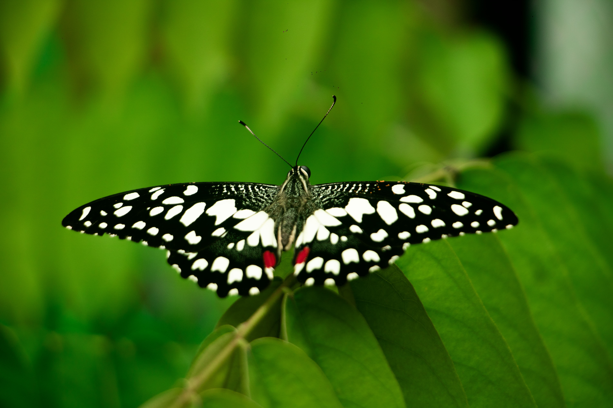

Alan Varghese
Wildlife Photographer
A young wildlife photographer from Kerala who captures rare moments of nature with patience and emotion.
Wildlife • Photography • Storytelling
Wildlife Photographer
A young wildlife photographer from Kerala who captures rare moments of nature with patience and emotion.

Photography for Alan began as curiosity. Over time, it evolved into patience, observation, and understanding the rhythm of wildlife. Each frame reflects his connection with nature rather than just the subject.

“Silent dominance of the forest king.”

“A fleeting moment between sky and freedom.”

“Wisdom walking through ancient paths.”